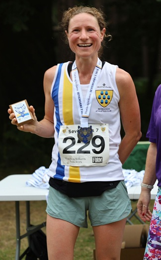

With new management and Kent Grand Prix status, the Sevenoaks 7 attracted twice as many runners as in recent years.
The organisers and helpers, led by David Hale and Lucy Ching, did a brilliant job, and even the weather was kind.
With great support along the way, ten SAC runners were able actually to run the race including Nicola Glover sweeping up at the rear of the field.
Jake Mears, 3rd overall, and Sophie Day, 1st W35, lead the way for SAC.
The SAC results were:
| Posn | Gun | Chip | Name | Num | Cat | Sex | Club |
| 3 | 0:40:37 | 0:40:37 | Jake Mears | 237 | SM | M | Sevenoaks Ac |
| 72 | 0:51:50 | 0:51:48 | Daniel Witt | 216 | M50 | M | Sevenoaks Ac |
| 87 | 0:54:19 | 0:54:05 | Sophie Day | 229 | W35 | F | Sevenoaks Ac |
| 143 | 0:59:47 | 0:59:40 | Simon Hallpike | 283 | M70 | M | Sevenoaks Ac |
| 154 | 1:00:50 | 1:00:23 | Leonard Lai King | 236 | M40 | M | Sevenoaks Ac |
| 180 | 1:04:05 | 1:03:57 | Silvia Forcat | 76 | W45 | F | Sevenoaks Ac |
| 219 | 1:08:21 | 1:08:00 | Jon Copping | 351 | M60 | M | Sevenoaks Ac |
| 249 | 1:14:06 | 1:13:50 | Daryl Crasta | 352 | M40 | M | Sevenoaks Ac |
| 284 | 1:20:40 | 1:20:24 | Lionel Stielow | 194 | M70 | M | Sevenoaks Ac |
| 303 | 1:37:20 | 1:36:45 | Nicola Glover | 79 | W35 | F | Sevenoaks Ac |
The full results are here.
Thanks to Richard Craig-McFeely (Instagram @picsbyrcm) and James Graham for the race photos which are here.